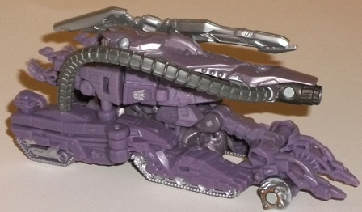
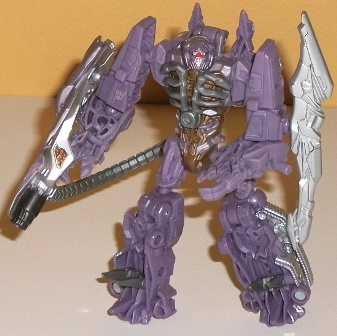
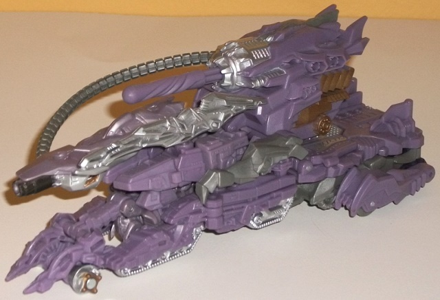
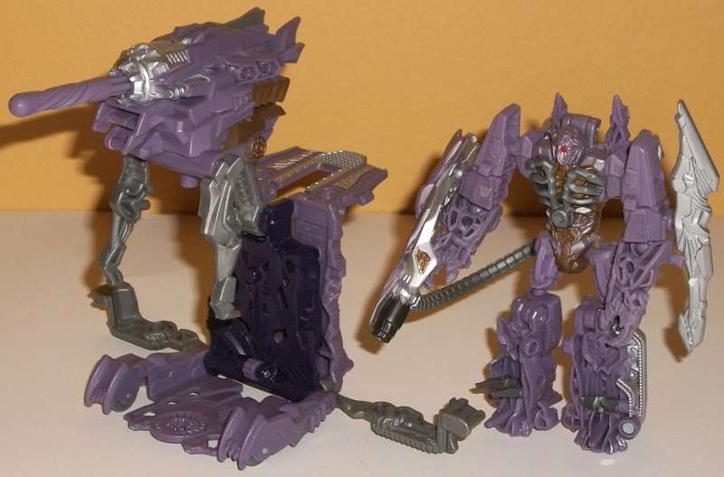
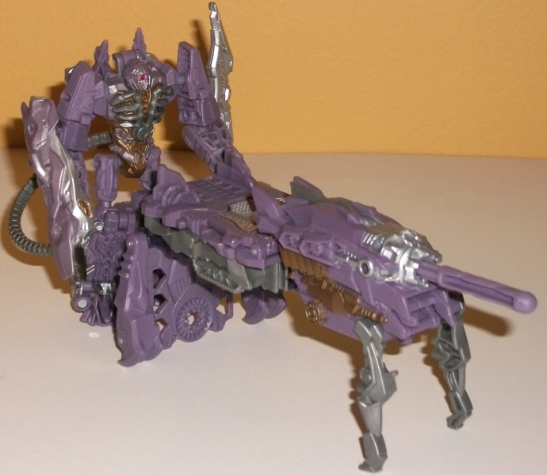

Shockwave
w/ Fusion Tank
Shockwave
w/ Fusion Tank
Allegiance
: Decepticon
Size
: Cyberverse Vehicle Set
Difficulty of Transformation to Robot
:
Easy
Difficulty of Transformation to Bases
:
Very Easy
Color Scheme
: Milky purple, moderately
light milky gray, silver, and some dull pale metallic bronze, red, and
dark purple
Figure Rating
: 6.8
Base Rating
: 7.2


Shockwave's "individual"
vehicle mode follows the general look of his larger
Voyager
figure
, being a Cybertronian tank, with the emphasis clearly not on
this mode. (It doesn't appear in the movie, anyway.) This smaller, Commander-sized
version of Shockwave's vehicle mode looks considerably less solid than
his voyager-sized pal, though, with the back half of the non-rotating "turret"
area not really fitting together all that well, and some visible holes
in between his treads and parts of both the rear section and the front-middle
section of this mode. It also doesn't really have any back half, and the
hose accessory-- which connects from his gun to one of a few different
points among either side of his rear treads-- is a bit too long proportionally,
bending outwards a bit more than I'd like. That said, the front section
looks quite cool with its two "claws", as does the big silver sword-like
bit on the left side of the "turret" and the large cannon on the right
side looking fairly impressive. The color scheme of milky purple and silver/gray
is pretty straightforward, but definitely screams "Shockwave", and is certainly
better-looking than a more movie-accurate color scheme, which would have
made him considerably duller. I wish another accent color or two was visible
in this mode, though, as there's a bit TOO much milky purple overall.
Shockwave's robot mode
is considerably better. In fact, it's downright impressive for the scale,
having (nearly) all the features that the larger Voyager class version
of him does. His cannon and sword can be mounted on either arm, and the
hose still can connnect from his cannon to a hole in his lower back (though
again, the hose is a bit too long proportionally). The front sections of
the vehicle mode fold up quite nicely out of the way behind his back, and
other than those minor bits there's no vehicle kibble in this mode. It
also becomes quite apparent in this mode just how incredible Shockwave's
mold detailing is-- even the tiniest bits on his face, chest, arms, and
legs are fairly accurately re-created at this smaller scale, and even little
pieces like his chest "rib cage" can separate slightly for this mode, as
well as his "ankle spikes" being able to flip forward into their movie-accurate
position here. On a toy this size, I can't emphasize just how impressive
this is. His bits of bronze paint detailing on his chest and waist look
quite nice, though I wish the bronze was a bit brighter to contrast with
the purple a bit more. The bits of silver and red paint on his face also
are done quite well, though otherwise I would've appreciated a few more
paint apps showing up in this mode (particularly on his arms)-- again,
there's a bit too much of that milky purple, here. His overall robot proportions
are great, and make him look like a bulky warrior-assassin without going
too far in that "bulk" direction. His articulation is also great for a
Commander-class figure-- he can move at the neck, shoulders, elbows (at
two points), hips, and knees-- and most of these are on ball joints, so
given his proportions and lack of kibble he can get into some pretty cool
poses.



When Shockwave's vehicle
is combined with his base, it forms a bit more of a "complete" vehicle,
with a considerably more solid look than his "solo" vehicle mode. His base
accessory essentially serves as a "trailer" for his tank, making it longer,
bulkier, and with a large turbine-like spring-loaded missile launcher near
the rear end. (You can also connect Shockwave's hose from his forward cannon
to the spring-loaded launcher in this mode, which looks MUCH better in
this mode given the length of said hose.) The launcher is unfortunately
on a bit of a hair trigger, which is a shame because I really love all
the mold detailing on this thing-- it continues the "exTREME" amount of
detailing from Shockwave's solo toy, with vents, gears, and all sorts of
alien mecha detailing all over this modified vehicle mode. A bit of dull
metallic bronze is also added to this mode compared to the solo vehicle
mode-- it looks nice enough, but I would've preferred a bit more of it
and/or the silver, as there's still too much purple on this toy overall.
In its base/repair bay
mode, the Fusion Tank forms a pretty standard-quality base for this subline,
with a place for a legion-class figure to stand in the middle of the base
while little "repair arms" that hang down from the main cannon "work" on
him. (The "repair arms" can move back-and-forth at one point, with the
cannon itself able to move back-and-forth at two different points.) A legion
figure can also stand on the back end, "manning" the cannon, and two small
gray bits fold down from the sides of this mode to form connection points
for other Cyberverse base sets, if you have any desire to connect them
up. I do quite like the appearance of dark purple in this mode; I really
wish more of Shockwave's lighter purple had been switched to this dark
purple instead, as it would have made him generally a bit more visually
interesting color-wise, with the dark purple complementing the lighter
purple quite nicely. The fact that Shockwave's base mode isn't really made
for figures of his size-- but rather legion-scale figures-- is also a fairly
big downer.
The base mode can essentially
"tip over", with the cannon parts folding up, to form a "weapon mode" for
Shockwave to man the back of. It's okay, I suppose, but it doesn't really
bring anything else new to the toy, just the ability for Shockwave to personally
man his missile launcher in robot mode. You can't really repurpose it for
anything else, as it's a bit straightforward even for a Cyberverse vehicle
set accessory.
The Shockwave w/ Fusion Tank set is one of the more unusual sets out of the Cyberverse Vehicle Set size class, as both Shockwave and his Fusion tank accessory transform into rather futuristic, abstract modes, and thus aren't as immediately recognizable as a certain kind of vehicle. The core figure has a very weak tank mode-- even weaker than his larger toy-- but a GREAT robot mode for the size, with more proportionate arms than the larger version. The Fusion Tank accessory is okay, but doesn't really do much to differentiate itself from the other Cyberverse sets in terms of its overall construction-- it feels a bit "sameish" in that regard. If you want a Cyberverse version of Shockwave, here's your (only) option, and it isn't that bad if you ignore his solo vehicle mode; however, if the "core" figure matters more to you than accessories, spend an extra $5 and go for the voyager class version instead.
Review by Beastbot